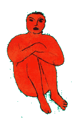

|

|
| живопись |
журнал |
медиа |
слова и рифмы |
разное
|
Non frustra fit per plura quod potest fieri per pauciora.
Когда черновики Пушкина стали широко доступны, специалисты и обыватели были поражены, какая титаническая работа стояла за финальной легкостью стиха.
Многослойная правка одних и тех же строк свидетельствует
о
том, с каким трудом Пушкин искал не только сюжетные варианты,
но и словесные определители.
А ведь то - Пушкин! Меня всегда ставит в тупик вопрос: за сколько ты нарисовал ту или иную картину? Допустим, втирал в нее краску я 15 минут. И два года перед этим искал композицию. За сколько же я ее нарисовал? |
|||
 |
 |
||
 |
|||
 |
 |
||
12 октября 2017 г. |
|||
Водичка дырочку найдет.
Для любого художника важно попробовать себя в смежных ремеслах.
Рисовальщику необходимо получить представление о скульптуре – лепке, гончарке, резьбе по дереву.
Это дает ощущение объема, чувство материала. Не только отсечь все лишнее, но добавить отсутствующую пустоту.
Моей скульптурной школой стала гидроабразивная резка – современный высокотехнологичный метод. Один недостаток – нет непосредственного контакта, камень видишь через призму Автокада. |
|||
 |
|||
 |
 |
||
 |
 |
||
 |
 |
||
10 мая 2016 г. |
|||
Ab ovo.

18 января 2015 г. |
Виток.2013: 
2003: 
5 января 2014 г. |
Художник и мировой кризис.больше всего хочется, когда нельзя. когда нет возможности. поэтому как только возникают финансовые проблемы сразу хочется заняться монументальным проектом. и как следствие - требующим вложений. 
но выход есть - берем (на хозяйственном рынке) лист оргалита 1.2 х 2.5м (160р) и распиливаем (на месте) на 10 кусков 60 х 50см. получаем стоимость куска - 16р. (холст аналогичного размера - от 350р.) 50 х 60 или чуть больше (50 х 70, 40 х 60) оказывается оптимальным размером. в меру монументальным, удобным для работы, транспортировки, хранения, реализации. эксперимента ради обязательно надо написать одно полотно 1,5 х 1,5м. не забудьте поделиться ощущениями : ) идем в хозяйственный и покупаем банку белой масляной краски - 0.9кг за 80р. (для сравнения тюбик 120мл в художественном магазине 130р.) этой краски хватит загрунтовать весь оргалит и даже непосредственно на художества останется. грунтовать лучше добавив колеру за 40р. преимущества хозяйственной маслянной краски являются ее и недостатками. (я замечал, что так вообще со всякими вещами и явлениями.) она жидковата. и она довольно быстро подсыхает. это здорово для грунтования, но при непосредственно живописании лучше под рукой иметь живичный скипидар. продается в аптеке и в отличие от уайт-спирита имеет благородный аромат. купить в том же хозяйственном для подмалевка тонкую и среднюю кисти за 20 и 25р. совсем сэкономить на кистях не выйдет. и для детальной прорисовки еще парочка приличных кистей все же понадобится (40-60р в зависимости от производителя). идем в художественный салон. для оргалита хороша щетина и только щетина. синтетика тоже хороша, но облазит от оргалита в момент. 3 тюбика масляной краски по 60мл (цена 40-80р за тюбик в зависимости от цвета и марки): жолтый, красный, синий. не забываем, что белого у нас есть и много. далее: оранжевый = красный + жолтый; зеленый = жолтый + синий; фиолетовый = красный + синий; коричневый = красный + синий + жолтый. хотим осветлять - добавляем белый, хотим затемнять - коричневый. от палитры в привычном ее понимании советую отказаться вовсе. лучше купить упаковку одноразовый пластиковых стаканчиков и смешивать прямо в них. не забываем добавлять живичного скипидару. ну и чтобы увековечить всю эту красоту хорошо подойдет автомобильный лак в спрее. 150р балон (в любом автомагазине). на 10 оргалитов потребуется 2 балона. (художественного лака потребуется в среднем на 120р на полотно). попытка еще более удешевить процесс и использовать древесный хозяйственный лак из банок не увенчалась успехом - хозяйственный лак чуть нахрен все не разъел. дешево и сердито. вуаля! 21 января 2011 г. |
Молодая шпана.одна голова хорошо, а две лучше. так была придумана конная милиция. 
а вот, собственно, и лошадка. 
13 октября 2009 г. |
Размер.что бы там не говорили, а размер есть размер. величие писателя определяется количеством шкафов, требуемых под его собрание сочинений. величие художника определяется требуемой высотой потолков. так считаю я и ведущие музеи мира. в 2008 году я замахнулся на 1м2. ещё подрастем? ; ) 
19 февраля 2009 г. |
Багет.живопись живописью, но даже самая убогая работа, выполненная на холсте и вставленная в багет, всегда будет выигрышнее и привлекательнее самой высокотехничной, выполненной на оргалите и лишенной дополнительного оформления. к такому мнению прихожу я и совет директоров IKEA. поэтому, в 2007 году все свои шедевры я заключил в золотые рамы. 
10 января 2008 г. |
Стихи.чтобы описать прошедший 2006-ой, я приведу несколько четверостиший, написанных в нем же. это должно многое объяснить. I дела, заботы и дела. корнеги в пику и ответом не лучше ль просыпаться с бодуна? что бы тревожила лишь мысль, что лопнет голова. II пройдут запои спадет с лица опухлость и ясность мысли пронзит на вылет тупость не будет каждый день днем взятия бастилии но стану ли я счастливее?... III любовь оставляет на сердце ожоги как жаль не могу влезть тебе под кожу не могу быть ближе и осторожней я весь наружу ты вся невозможна IV чуть больше брутальности чуть меньше брутальности я не хотел бы дойти достичь крайности у кого то лечица у кого то не лечица разве это повод отказать в человечности? концы и конечности V трясутся руки по утрам, как хер у птицы трясогузки, дай мне стакан и отъебись с ценой и смысловой нагрузкой. так, собственно, и год прошел. 10 января 2007 г. |
Лесозаготовки.меня часто спрашивают, как я придумываю свои картины? с чего все начинается? отвечаю: собственно, именно так выглядит начальный этап работы над полотном. я пилил, Коля-Вова фоткал. нет, что б помочь ; )) |
 |
 |
 |
 |
||
 |
 |
 |
 |
1 марта 2005 г. |
Художник голых баб.я рисовал животных. рисовал цветочки. рисовал дома. и снова животных. а потом неожиданно (но вполне закономерно!) стал рисовать голых баб. не с натуры. а так, по общим представлениям о них. к примеру, первой я нарисовал голую негритянку. в реальной жизни я никогда не видел живой голой негритянки. просто в тот момент у меня было четыре тюбика коричневой краски. и ничего лучшего для их намазывания я не придумал. рисование голых баб было встречено общественностью вобщем то прохладно. хотя, это такая тема, где не каждый скажет, что думает. к примеру, когда по телеку показывают эротику (а то и порно!) на следующий день все ругаются и плюются. но при этом смотрят до конца. за уши не оттащишь. так же, изображение женского тела моей техникой женщинам и вправду должно быть безразлично. а мужикам вообще все безразлично. так что удивляться тут не приходится. однако, это не значит, что я тут же вернулся к цветочкам и птичкам. вовсе нет. закономерность наступления этапа изображения обнаженного тела в том, что он приходит именно с опытом. с изменением понимания процесса. была недавно беседа с S. как то она, как мне показалось, была настроена в штыки против голых баб. а надо сказать, что S. весьма увлечена своей коллекцией фотоаппаратов. а фото и живопись не очень далеко ушли друг от друга. я ее попросил назвать сюжеты для изображения (фото, картинку, т.п.). лично я открыл для себя, что их не так уж и много: 1. природа - пейзаж; - животное; - растение; 2. техноген - город; - машина; 3. человек - лицо; - тело; - отношение к нему. при этом, каждый пункт может быть статичен или динамичен. это тоже сюжет, а не способ реализации сюжета. S. мне указала на важное упущение - "АБСТРАКЦИЮ", с чем я не мог не согласиться. но на этом направления сюжетов и кончились. придумайте сами сюжет, и я покажу вам, что он - комбинация вышеуказанных. я не хочу сказать, что приемлю любую форму, раз приемлю форму творчества голых баб. вовсе нет. это очень тонкий вопрос. то что удавлось, к примеру, Модильяни в два мазка, на мой взгляд так и не удалось многим именитым. не буду говорить кому, т.к. это субъективно, а раз так, то и не зачем людей обижать. изображая голую бабу ты говоришь, что это - то что изображено - и есть хорошо. иначе зачем изображать плохую голую бабу? плохую бабу лучше нарисовать в одежде. таким образом, изображение голых баб - важный столп сюжетной живописи. не будем забывать об этом. 26 ноября 2004 г. |
Бесполезные советы.Я, как и все, очень люблю советовать. и этот пост посвящается бесполезным советам для людей, которые планируют заняться живописью, но никогда не займутся. хочу сразу оговориться, что не могу посоветовать ничего путного в принципе, потому как из всех искусств обучался только одному - дудеть в дуду. и то без успеха; ) Жолтый - король цветов. его можно добавлять в любой цвет, отчего тот станет только лучше. только в чорный нельзя добавлять. вернее можно, только бестолку. потому что чорный - сам король. зато комбинацией чистого жолтого и чистого чорного можно создать абсолютный шедевр. Всегда уделяй внимание мелочам. однако никогда не опускайся до того, чтоб рисовать своим персонажам реснички и прочую дрянь. Выбери свою поверхность для рисования. после долгих поисков и экспериментов лично я обнаружил, что мне больше всего подходит оргалит, которым обиты стены моего офиса. с тех пор я рисую только на нем. а в офисе идет капитальный ремонт ; ) Жизнь чертовски коротка. а рукописи все же горят. и еще как! так что не трать времени на тушь, акварель, гуашь, цветные мелки. все глупости. масло - выбор достойный достойных. Не покупай кистей по 3р. и по 103р. не покупай. покупай по 25р. и периодически обновляй свой инструмент. Работы, которые тебе не нравятся не стоит уничтожать или выбрасывать. просто раздавай знакомым ; ). только не вздумай брать денег - перестанут брать товар. Работы, которые тебе нравятся, раздавать не стоит. складывай их в чуланчик до лучших времен - сохранней будут. Терпение и аккуратность - залог успеха. чувство вкуса можно привить. технику - нарастить. но если нет аккуратности и терпения - все без толку. И, наконец, самое главное - реши для себя чего ради это все? снимаешь стресс? сломался телевизор и вечером нечем заняться? хочешь денег и славы? реши и следуй своему решению. не стоит заниматься дизайном интерьера и рассуждать о революции духа. также не стоит готовить революцию духа и ожидать прижизненного понимания. или добившись прижизненного понимания требовать еще и прижизненного признания ; ) Есть люди, которые считают, что художник должен быть голодным. я так не считаю. пусть голодают сами. художник должен быть сыт, обут, одет. так же рекомендуется наливать ему рюмочку. одну - к обеду. и тогда художник не будет думать о быте, а только об искусстве. а когда художник голоден, плохо одет и беден - это путь к прогрессивному алкоголизму. 2004 г. |
живопись | журнал | медиа | слова и рифмы | разное | |
levèèn ©.2004-16 |
|